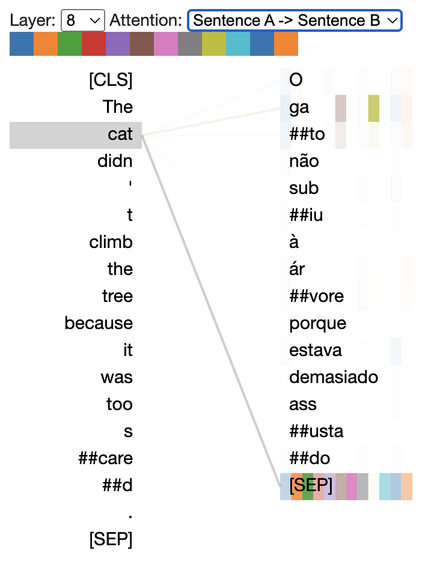
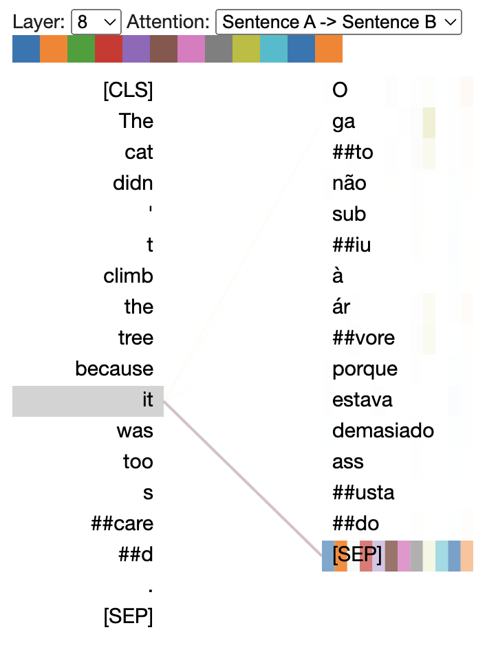
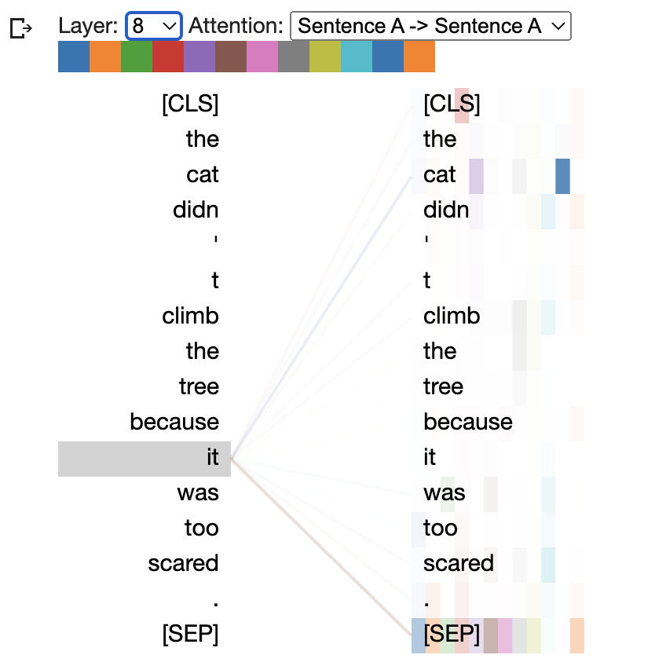
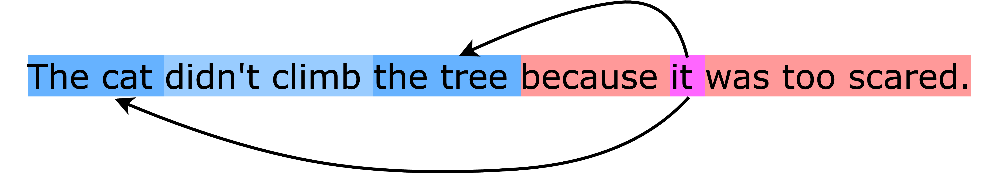
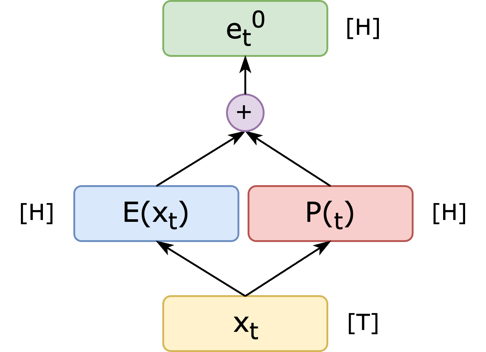
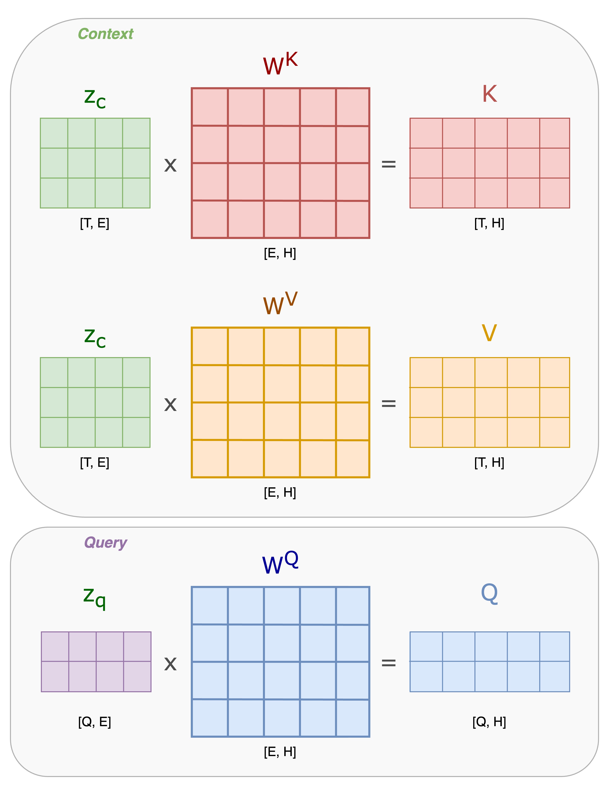
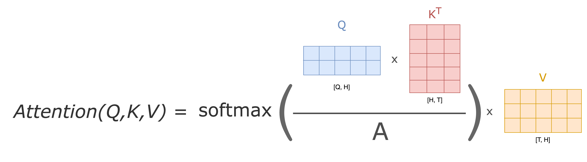
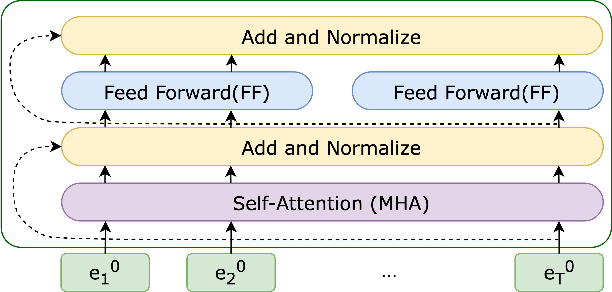
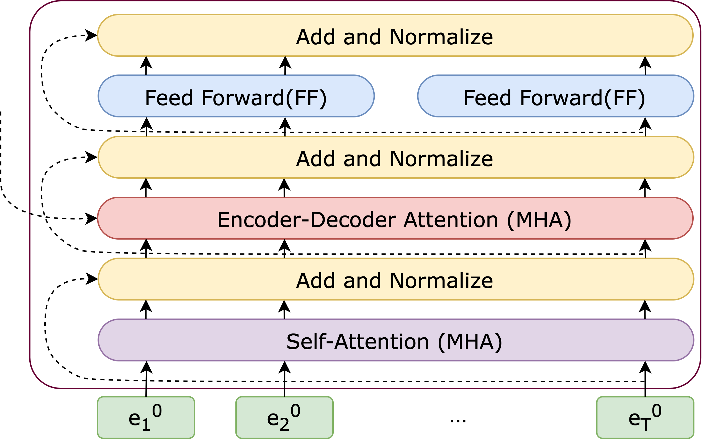
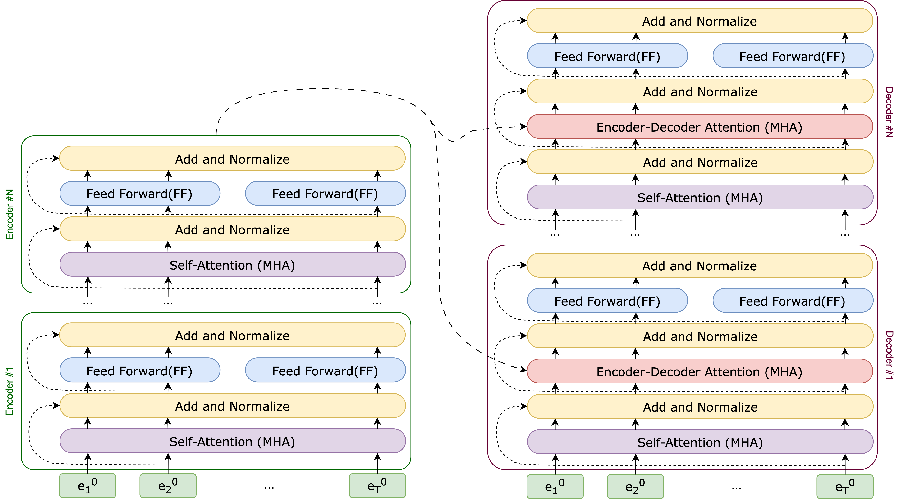

Transformers Day 4
Today’s assignment
Today’s class will demystify the Transformer architecture (Vaswani et al. 2017). Transformers have become the dominant model in Natural Language Processing, pushing the performance of many tasks through models like BERT (Devlin et al. 2018) and GPT (T. Brown et al. 2020). In this class, we will review the transformer architecture. The focus of the class is to understand and implement the self-attention mechanism in Pytorch. For this, we will use an annotated version of Karpathy’s minGPT code (https://github.com/karpathy/minGPT).
Before Diving into Transformers
Before diving into transformers, we would like to introduce two important details of defining and training transformers.
Positional Encoding
Different from models with recurrence/convolution, positional information is not encoded in Transformers. Therefore, Vaswani et al. (2017) include the positional embedding as part of the input to Transformers. The most popular way to compute the positional embedding (\(PE\)) is to use the sinusoidal expressed as \[PE_{(pos,2i)} = sin(\frac{pos}{ 10000^{2i/d_{model}}}),\] \[PE_{(pos,2i+1)} = cos(\frac{pos}{ 10000^{2i/d_{model}}}),\]
where \(pos\) is the position and \(i\) is the dimension.
Tokenization
Transformers operate on sequences of input. In the case of natural language, these sequences could be whole words, single characters, or something in-between. The process of breaking a text string into these smaller pieces is called tokenization. Most transformers use subword tokenization, which operates on the idea that frequently occurring words should occur as single units, while rare words should be split into smaller pieces that occur more frequently. The most widespread subword tokenization algorithm is byte pair encoding (BPE) (Sennrich, Haddow, and Birch 2016), which allows any string to be represented as a sequence of pieces from a finite vocabulary.
Tokenization
Let’s see how three commonly-used tokenization techniques can be applied in practice.
Run the word-based tokenizer and try out different
text:text = "I travelled to Lisbon in July to attend an NLP summer school" text.split()Run the character-based tokenizer and try out different different
text. Can you imagine what problems character-level tokenizers pose to NLP models?text = "I will travel to Lisbon in July..." tokenized = [c for c in text if c not in [",", ";", ":", "'", "!", "?"]] print(tokenized)Run the BPE (byte-pair encoding) tokenizer. Can you guess which words will be split subwords and which ones won’t?
from lxmls.transformers.bpe import BPETokenizer tokenizer = BPETokenizer() sentence = "Your drawing is charmingly anachronistic." tokenizer.encoder.encode_and_show_work(sentence)
Transformer Architectures
The basic building block of the Transformer combines a large feed-forward network with a multi-head self-attention layer. We have seen feed-forward models in previous days and we will focus here on multi-head self-attention. Refer to previous days for details on the basics of feed-forward models. There are three main varieties of transformer model:
Encoders: map a sequence of \(T\) observations, e.g. some word or sub-word units \(x_1 \cdots x_T\) to a hidden representation of size \(H\), yielding a matrix of embeddings of size \((H, T)\). These contextual embeddings can be combined with a task-specific prediction layer, as in BERT.
Decoders: given a sequence of \(T-1\) observations, e.g. some word or sub-word units \(x_{<T} = x_1 \cdots x_{T-1}\), predict the next word \(x_T\). This architecture is the basis of many common large language models, such as GPT.
Encoder-Decoders: map a sequence \(x\) to another sequence \(y\), which might be of a different length. For this, first \(x\) is processed with an Encoder. Then \(y\) is processed with a modified Decoder which uses a cross-attention mechanism to compute attention between \(x\) and \(y\). Encoder-Decoder models are commonly used for machine translation, as well as in some general-purpose language models such as T5.
Although these models are used for different purposes, the architectures are very similar. In these exercises, we focus first on the Encoder and then explain the other two.
Attention




Attention mechanisms have become a crucial component in effective sequence modeling across different tasks like machine translation (Bahdanau, Cho, and Bengio 2014), and they predate transformers by several years. The general idea of an attention mechanism is that it assigns scores to the hidden states of a model so that it knows where to focus. Figure [fig:ed_att_sample] shows how an attention mechanism can decide which source words to focus on when generating each target word. In the left image, we can clearly see that the attention of the token ‘cat’ is specifically directed towards the token ‘gato’, which corresponds to its accurate translation. Similarly, in the right image, the word ‘it’ is attentively aligned with the token ‘gato’ once again. Transformers (Vaswani et al. 2017) use several varieties of attention, most famously self-attention, in which scores are produced to model the relationship between all pairs of tokens in a single sequence (see Figure 1).
In order to understand why attention mechanisms are such powerful tools, it is helpful to understand the architectural limitations of models like RNNs. In an RNN, the hidden state \(h_t\) has a direct connection to the previous hidden state \(h_{t-1}\), but not from all hidden states elsewhere in the sequence. This leads to information loss because all relevant information at time \(t\) needs to be put into a single fixed-dimensionality vector – information from several steps in the past may be lost, so these models tend to have a recency bias. This can be a problem in natural language applications because there are often complex relationships that depend on words far away in the sequence, as in the example in Figure 2. For a human being, the question of whether the pronoun “it” refers to the cat or the tree is relatively simple due to our prior knowledge about cats and trees. With our understanding of these concepts, we can confidently determine the intended reference of the word “it.” For a model, however, discerning the referent of the pronoun “it” – whether it is the cat or the tree – may be more of a challenge because “the tree” occurred more recently. An attention mechanism enables a model to access all hidden states \(h_1 \cdots h_T\), not just the most recent.
Now let’s explore each building block of the Transformer architecture and examine how the Attention mechanism fits in this.
Encoder Architecture
In the original paper for transformers (Vaswani et al. 2017), a “sub-layer“ is formed by either a Feed-Forward (\(\mathrm{FF}\)) or Multi-Head Attention \(\mathrm{MHA}\) (or other named \(\mathrm{sub-block}\)s) followed by a sequence of operations. In this section, we begin by explaining the encoder architecture. Note that the notation of “sub-layer“ also applies to the following sections.
Simplified Encoder Architecture
The encoder architecture can be succinctly described as stacking a number of \(N\) blocks on top of each other combining a \(\mathrm{FF}\) and \(\mathrm{MHA}\) sub-blocks. A single block is defined as
\[e^{n+1} = \mathrm{FF}(\mathrm(MHA(e^n)).\]
The input to the first block \(e^0\) is the sum of position \(P\) and non-contextual embeddings \(E\) of the input. Assuming \(x_1 \cdots x_T\) is a sequence of integers (indices to a vocabulary of \(V\) symbols) we have that
\[e^{0}_t = \mathrm{E} \cdot \mathrm{1}_{x_t} + \mathrm{P} \cdot \mathrm{1}_t \quad \mbox{for} \quad t=1 \cdots T\]
where \(\mathrm{1}_{x_t}\) and \(\mathrm{1}_t\) are indicators, i.e.
one-hot, vectors for the token content (vocabulary symbol) and the token
position. \(\mathrm{E} \in \mathbb{R}^{H
\times V}\) is the non-contextual embedding matrix for each
symbol in the vocabulary and \(P^{H \times
\tau}\) is the position embedding matrix, where \(\tau-1\) is the furthest position
supported. See Figure 3 for the construction of the input of the
first block.

The feed-forward (\(\mathrm{FF}\)) is given by:
\[FF(z) = W^2\cdot \mathrm{gelu}(W^1 \cdot z)\]
with weight matrices \(W^2 \in \mathbb{R}^{H \times 4H}\) and \(W^1 \in \mathbb{R}^{4H \times H}\), that expand and contract the hidden dimension \(H\).
Attention consists of three matrices: Query (\(Q\)), Key (\(K\)), and Value (\(V\)). To obtain \(Q\), \(K\), and \(V\), we perform a linear projection of the input using corresponding matrices that are learned during the training process.
The concept of Query, Key, and Value is similar to retrieval systems. When searching for an article on the web using a specific Query, the search engine maps the Query against a set of Keys or titles associated with candidate results in their database. It then presents the best-matched articles or Values to the user. In concrete terms, we can think of it as a weighted modification of a query \(Q\), given some context \(K\) and \(V\). There are two cases to consider:
Cross-Attention: The query \(Q=W^Q\cdot z_q\) is a query from one sequence, and \(K=W^K\cdot z_c\) and \(V=W^V\cdot z_c\) are the context from another sequence.
Self-Attention: The query \(Q=W^Q\cdot z\) is a query from one sequence, and \(K=W^K\cdot z\) and \(V=W^V\cdot z\) are the context from the same sequence.
In Figure 4, we present the computation for \(K\), \(Q\), and \(V\) in a cross-attention scenario with a given input \(z_q\) and a context \(z_c\). Notice that this case is more general, for self-attention, we have \(z_q=z_c=z\).

Then, to perform attention, we follow these steps:
Measure Similarity: We calculate the similarity between, Query and Key. This is often done by taking the dot product of the two matrices.
Find Maximum Match: We extract the key with the maximum match. This means identifying the Key that has the highest similarity with the Query.
Retrieve Value: Once we have the Key with the maximum match, we can retrieve the corresponding Value associated with that Key.
This simple 3-step process is in fact the Attention mechanism. Where we are looking for the best matching tokens for the source sequence in the target sequence. Let’s compute the cross-attention score step-by-step. The Key and Query matrices are multiplied by each other and normalized by a constant value \(\frac{1}{A} W^Q z_q \left(W^K z_c\right)^T\) or \(\frac{1}{A} Q K^T\). The \(A\) value is usually chosen to be the square root of the dimension of the key matrices. This leads to having more stable gradients.
Then pass the result through a \(softmax\) operation. The Softmax normalizes the scores so they’re all positive and add up to 1. In other words, extracts a distribution of relative scores from a given token for each token in the input sequence.
After this multiply the output by the Value matrix: \(\underset{i \rightarrow}{\mathrm{softmax}}\left( \frac{1}{A} W^Q z \left(W^K z\right)^T \right) \cdot W^V \cdot z\) or simply \(V \cdot \underset{i \rightarrow}{\mathrm{softmax}}\left( \frac{1}{A} Q K^T \right)\). See Figure 5

The Multi-Head Attention (\(\mathrm{MHA}\)) enhances the Attention layer in two ways: it allows the model to focus on different positions within the input, enabling a better understanding of pronoun references; and allowing projection of input embeddings into distinct representation subspaces, thereby improving overall performance.
Finally getting the following mathematical form for the \(\mathrm{MHA}\):
\[MHA(z) = W^o \cdot \begin{bmatrix} \underset{i \rightarrow}{\mathrm{softmax}}\left( \frac{1}{A} W^Q_1 z \left(W^K_1 z\right)^T \right) \cdot W^V_1 \cdot z \\ \underset{i \rightarrow}{\mathrm{softmax}}\left( \frac{1}{A} W^Q_2 z \left(W^K_2 z\right)^T \right) \cdot W^V_2 \cdot z \\ \cdots\\ \underset{i \rightarrow}{\mathrm{softmax}}\left( \frac{1}{A} W^Q_D z \left(W^K_D z\right)^T \right) \cdot W^V_D \cdot z \\ \end{bmatrix}\nonumber\]
where we have \(D\) attention heads. Each head contracts the hidden dimension \(W^K, W^Q, W^V \in \mathbb{R}^{E \times H}\) into a space of size \(E\) which is equal to \(H / D\) (this has practical implementation consequences, \(H\) and \(D\) should be set properly). Outputs of all heads are concatenated and projected again with \(W^o \in \mathbb{R}^{H \times H}\). Please note that the dimension of \(W^V\) can be different in the general case. The above-mentioned dimensions are correct for the cases when the source and target sequences have equal lengths, which is mostly not the case.

Adding Dropout, Residuals, and Layer Normalization
To complete the “sub-layer“, a dropout followed by a residual connection and a layer normalization is applied to input \(z\) that has been passed through a \(\mathrm{sub-block}\), where a \(\mathrm{sub-block} \in \{\mathrm{FF}, MHA\}\). Together, we can express the function as
\[C(x) = \mathrm{layernorm}(\mathrm{residual}(\mathrm{dropout}(\mathrm{sublayer}(z)), z)\]
where \(\mathrm{sublayer} \in \{\mathrm{FF}, \mathrm{MHA}\}\).
Specifically, we have
\(\mathrm{dropout}(x) = r * x\) where \(r_j \sim \operatorname{Bernoulli}(p)\) and \(*\) refers to element-wise multiplication1,
\(\mathrm{residual}(x, z) = x + z\), and
\(\mathrm{layernorm}(x) = \frac{x-E(x)}{\sqrt{Var(x)+\epsilon}}*\gamma + \beta\) where \(E(x)\) and \(Var(x)\) are computed among dimensions other than the dimension for the batch2.
After incorporating all of these subcomponents, we obtain the final Encoder block, as illustrated in Figure 6
Decoder Architecture
This is identical to the Encoder architecture with two differences
We feed if a partial sequence \(x_{<t}\) and take the last output \(h_{t-1}\) as the hidden vector for \(x_t\)
We mask every head of \(\mathrm{MHA}\) to prevent any value of time \(p\) to depend on values of \(>p\)
The implementation of training realizes 1) by masking input partial sequence \(x_{<t}\) and hidden units from the corresponding positions with an attention mask. This attention mask is also applied during inference time.

Once all these subcomponents are integrated, we achieve the final Decoder block, which is depicted in Figure 7.
Encoder-Decoder Architecture
In the Encoder-Decoder Architecture, the encoder is the same as section 5. Therefore, we have the encoded embeddings as \(e^N = \mathrm{Encoder}(x)\).
The decoder in the Encoder-Decoder Architecture is a little bit different than section 6. Each layer of the decoder will include one more Cross-Multi-Head Attention (CMHA) sub-layer, and the order of sub-layers in a decoder layer will be \(\mathrm{MHA}\)-\(\mathrm{CMHA}\)-\(\mathrm{FF}\), i.e.
\[d^{m+1} = \mathrm{FF}(\mathrm(CMHA(e^N, MHA(d^m))).\]
Specifically, the query matrix is computed from the layer below it, while the key and value matrix are computed from \(e^N\), which can be expressed as
\[\mathrm{CMHA}(e^N, MHA(d^m)) = W^o \cdot \begin{bmatrix} \underset{i \rightarrow}{\mathrm{softmax}}\left( \frac{1}{A} W^Q_1 MHA(d^m) \left(W^K_1 e^N\right)^T \right) \cdot W^V_1 \cdot e^N \\ \underset{i \rightarrow}{\mathrm{softmax}}\left( \frac{1}{A} W^Q_2 MHA(d^m) \left(W^K_2 e^N\right)^T \right) \cdot W^V_2 \cdot e^N \\ \cdots\\ \underset{i \rightarrow}{\mathrm{softmax}}\left( \frac{1}{A} W^Q_D MHA(d^m) \left(W^K_D e^N\right)^T \right) \cdot W^V_D \cdot e^N \\ \end{bmatrix}\nonumber.\]

By combining \(N\) blocks of Encoder and Decoder, we obtain the complete view of the Transformer architecture, as illustrated in Figure 8.
Cross Multi-Head Attention & Multi-Head Attention Now let’s implement our own Attention mechanism, to that end let’s:
Complete the
cross_attentionfunction. Given two input sequences \(S_1\) and \(S_2\) and the transformation weights \(W_Q\), \(W_K\), and \(W_V\). You need to implement the following:Calculate the query, key, and value projections using linear transformations.
Compute the attention scores by performing the dot product between the query and key tensors.
Apply softmax activation to the attention scores to obtain the attention weights.
Multiply the attention weights with the value tensor to get the attended values.
Return the attended values.
import torch import torch.nn.functional as F def cross_attention(S1, S2, W_Q, W_K, W_V): ## Your code here return attended_valuesComplete the
CausalSelfAttentionclass. First, you should create linear projectionsquery_proj,key_projandvalue_proj.import math import torch.nn as nn class CausalSelfAttention(nn.Module): def __init__(self, config): super().__init__() # Initialize layers and parameters self.hidden_size = config.n_embd self.num_heads = config.n_head # TODO: Create the linear projections self.output_proj = nn.Linear(config.n_embd, config.n_embd) self.attn_dropout = nn.Dropout(config.attn_pdrop) self.resid_dropout = nn.Dropout(config.resid_pdrop) self.register_buffer( "bias", torch.tril(torch.ones(config.block_size, config.block_size)).view( 1, 1, config.block_size, config.block_size))Then apply
query_proj,key_projandvalue_projto split input into query, key, and value tensors:def forward(self, x: torch.Tensor) -> torch.Tensor: B, T, C = x.size() # TODO: Split input into query, key, and value tensors # Reshape and transpose tensors for multi-head computation query = query.view(B, T, self.num_heads, self.hidden_size // self.num_heads).transpose(1, 2) key = key.view(B, T, self.num_heads, self.hidden_size // self.num_heads).transpose(1, 2) value = value.view(B, T, self.num_heads, self.hidden_size // self.num_heads).transpose(1, 2)Then compute the attention scores. Note that the shape of scores should be
(B, num_heads, T, T)# TODO: Compute attention scores # Apply a causal mask to restrict attention to the left in the input sequence mask = self.bias[:, :, :T, :T] scores = scores.masked_fill(mask == 0, float('-inf'))Finally, apply soft-max activation and multiply attention weights with values to get attended values:
# TODO: Apply softmax activation to get attention weights # TODO: Multiply attention weights with values to get attended values # Transpose and reshape attended values to restore original shape attended_values = attended_values.transpose(1, 2).contiguous().view( B, T, C) # Apply output projection and dropout output = self.resid_dropout(self.output_proj(attended_values)) return output
Training different Transformers
We have introduced different architectures of transformers and will present different variants of transformers that are trained with different objectives, and thus applied to different downstream tasks. We briefly introduce all these transformers and provide references so you can read these papers if you are interested.
Training with Encoders
Encoder models solely utilize the encoder component of a Transformer model. In each step, the attention layers have the ability to consider all the words present in the original sentence. These models are known as ’auto-encoding models’ and are recognized for their ’bi-directional’ attention mechanism.
The pretraining of these models typically involves manipulating a given sentence, often by obscuring random words and assigning the model the task of identifying or reconstructing the original sentence. This objective is commonly referred to as Masked Language Modeling (MLM), and models pre-trained with this objective are known as Masked Language Models.
For a text sequence \(\textbf{x}\), the BERT model first constructs a corrupted version \(\hat{\textbf{x}}\). Let the masked tokens be \(\bar{\textbf{x}}\). The training objective is to reconstruct \(\bar{\textbf{x}}\) from \(\hat{\textbf{x}}\):
\[\begin{aligned} max_{\theta}logP_{\theta}(\bar{\textbf{x}}|\hat{\textbf{x}})\approx \sum_{t=1}^Tm_tlogP_{\theta}(x_t|\hat{\textbf{x}}) =\sum_{t=1}^Tm_tlog\frac{exp(H_{\theta}(\hat{\textbf{x}})_t^Te(x_t))}{\sum_{x\prime} {exp(H_{\theta}(\hat{\textbf{x}})_t^Te(x\prime)}}\end{aligned}\]
Where the \(\approx\) indicates that all \(\bar{\textbf{x}}\) elements are independent (seperately reconstructed), \(m_t\) indicates weather or not \(x_t\) is masked (1-masked, 0-not), \(H_{\theta}\) is a Transformer that maps a sequence \(x\) of length \(T\) and contains infomation about the context on both sides \(H_{\theta}(X)=[H_{\theta}(x)_1, H_{\theta}(x)_2,...H_{\theta}(x)_T]\), and \(e(x)\) denotes the embedding of \(x\).
Encoder models excel in tasks that demand a comprehensive understanding of the entire sentence. These tasks include sentence classification, word classification tasks e.g. named entity recognition, and extractive question answering. Widely used representatives of this model family include BERT (Devlin et al. 2018) and RoBERTa (Liu et al. 2019).
BERT (Devlin et al. 2018) is trained on MLM(Masked Language Modeling) and NSP(Next Sentence Prediction) objectives. In the MLM objective, 15% of the input tokens are selected. Among these selected tokens:
80% of the time, the mask token is inserted in place of the original token.
10% of the time, a random token is inserted in place of the original token.
10% of the time, the original token remains unchanged.
The NSP objective is applied to pairs of sentences, A and B, taken from the training set. In 50% of the cases, sentence B directly follows sentence A in the input, while in other cases, the pairs are randomly selected. The objective is to perform binary classification and predict whether sentence B follows sentence A or not.
RoBERTa (Liu et al. 2019) builds upon BERT’s pre-training by addressing its perceived undertraining. It introduces the following modifications:
Longer and larger-scale training: RoBERTa trains the model for an extended period using larger batches, more data, and longer sequences.
Removal of NSP objective: The next sentence prediction (NSP) objective, present in BERT, is eliminated in RoBERTa.
Dynamic masking: RoBERTa employs dynamic masking by duplicating the training data ten times and applying different mask patterns to each sample. This contrasts with BERT’s static masking, where a fixed mask is used for each sample.
These modifications aim to enhance RoBERTa’s pre-training performance and overall language understanding capabilities.
Training with Decoders
Decoder-only or Autoregressive modeling performs pretraining by maximizing the likelihood under the forward autoregressive factorization: \[max_{\theta}logP_{\theta}(\textbf{x})=\sum_{t=1}^TlogP_{\theta}(x_t|\textbf{x}_{<t}) = \sum_{t=1}^T{log\frac{exp(h_{\theta}(\textbf{x}_{1:t-1})^Te(x_t))}{\sum_{x\prime}exp(h_{\theta}(\textbf{x}_{1:t-1})^Te(x\prime))}}\]
Where the \(h_{\theta}(\textbf{x}_{1:t-1})\) is the context representation produced by the neural model, and it contains information (conditioned) about the tokens up to position \(t\), and \(e(x_t)\) is the embedding of a token \(x_t\).
A Decoder-only or Autoregressive model operates differently compared to Encoder-only or Autoencoder model by focusing on density estimation rather than reconstructing corrupted input. These models aim to estimate probability distributions, which limits their ability to capture bidirectional context. As a result, they are restricted to uni-directional processing.
GPTs.
The class of GPTs is a series of pre-trained decoder-only transformers. Models are pre-trained to perform the next token prediction with the Cross-Entropy criterion. Since the release of GPT-1 (Radford et al. 2018), GPTs are being trained with more parameters and training data, with GPT-2 (Radford et al. 2019), GPT-3 (T. B. Brown et al. 2020), InstructGPT (Ouyang et al. 2022) and GPT-4 (OpenAI 2023) being subsequently released. Note that since the release of InstructGPT (Ouyang et al. 2022), this class of language models has been trained with reinforcement learning with human feedback (Bai et al. 2022), which enables the model to manifest interesting behaviors that you see when using ChatGPT.
Training with Encoder-Decoder
To leverage the strengths of both Encoder-only and Decoder-only models, the concept of Encoder-Decoder models was introduced. While previous methods effectively captured bidirectional information for text generation, they had certain limitations in terms of contextual token representations. One common approach involved concatenating the left-to-right and right-to-left representations (Peters et al. 2018).
Encoder-Decoder models aim to overcome these limitations by combining the advantages of both approaches. These models can effectively capture bidirectional information while maintaining robust contextual representations for each token. By leveraging the strengths of both encoders and decoders, Encoder-Decoder models offer enhanced capabilities for various natural language processing tasks, including text generation.
Commonly employed members of this model family include BART (Lewis et al. 2020) and T5 (Raffel et al. 2020), which have gained significant popularity in the field.
BART.
BART (Lewis et al. 2020) an encoder-decoder model pre-trained on five tasks injecting noises into the input text: i) token masking (same as BERT (Devlin et al. 2018)), ii) token deletion, iii) text infilling by replacing sampled input spans with single masks, iv) sentence permutation, and v) document rotation. The powerful pre-trained denoising autoencoder is commonly used in generation tasks.
T5.
T5 (Raffel et al., 2020) utilizes a text-to-text methodology. In this
approach, various tasks like translation, question answering, and
classification are transformed into a unified format. The model is
provided with input text and trained to generate the corresponding
output text. To achieve this, a task-specific prefix(instruction) is
added to the input sequence, and the model is pre-trained to produce
outputs specific to each task.
Training Transformers
Let’s delve into practical training of a Transformer model to gain hands-on experience. Our initial step will involve creating a Decoder-based model (GPT-2 (Radford et al. 2019)) and training it on a modest dataset. Once this is completed, we can visualize the attention mechanism before and after the training process. Finally, we can compare the performance of the trained model during inference with that of the smaller trained model.
Training a Weather Prediction Model Using Autoregressive Transformer.
In this exercise, we will be working with a dummy weather dataset comprising sequences of weather observations and their corresponding states. The objective is to train a compact autoregressive transformer model that can predict the weather state based on previous observations. Let’s begin by importing the required modules and classes, and setting a seed value to ensure consistent output every time we run the file.
import random
import time
import numpy as np
import torch
from torch.utils.data.dataloader import DataLoader
random.seed(42)
from lxmls.transformers.bpe import BPETokenizer
from lxmls.transformers.dataset import WeatherDataset
from lxmls.transformers.model import GPT
from lxmls.transformers.trainer import Trainer
from lxmls.transformers.utils import set_seedTo begin, we initialize the training dataset, which comprises sequences of weather observations along with their corresponding states. These sequences are transformed into indices and then concatenated to create the input and output sequences for the transformer model. For more information on this, refer to: "lxmls/transformers/dataset.py".
fixed_proba = {}
fixed_proba["initial"] = [0.5, 0.3, 0.2]
fixed_proba["transition"] = [[0.5, 0.5, 0], [0, 0.5, 0.5], [0.5, 0, 0.5]]
fixed_proba["emission"] = [
[0.5, 0, 0.2, 0, 0.3],
[0, 0.5, 0.4, 0, 0.1],
[0, 0, 0.1, 0.5, 0.4],
]
Let’s print an example instance of the dataset.
train_dataset = WeatherDataset("train", proba=fixed_proba)
test_dataset = WeatherDataset("test", proba=train_dataset.proba)
x, y = train_dataset[0]
print("Sampling from the dataset:")
print(f"Input: {train_dataset.decode_obs(x.tolist()[:6])}")
print(f"Labels: {train_dataset.decode_st(y.tolist()[5:])}")
print("-" * 50)
print("Tokenized sequences:")
print(f"Input: {x.tolist()}")
print(f"Labels: {y.tolist()}")Moving forward, we construct a model using the default configuration for the GPT model, which encompasses parameters defining the model’s size and structure. In this case, we employ a compact variant known as GPT Nano.
model_config = GPT.get_default_config()
model_config.model_type = "gpt-nano"
model_config.vocab_size = train_dataset.get_vocab_size()
model_config.block_size = train_dataset.get_block_size()
model = GPT(model_config)
print(model_config)To facilitate the training of our model, we instantiate a Trainer object. The Trainer manages various aspects of the training process, such as configuring the learning rate, specifying the maximum number of iterations, and determining the number of workers for data loading. We initialize the Trainer with the model, training dataset, and validation dataset.
train_config = Trainer.get_default_config()
train_config.learning_rate = (
5e-4 # The model we're using is so small that we can go a bit faster
)
train_config.max_iters = 2000
train_config.num_workers = 0
train_config.device = "mps"
trainer = Trainer(train_config, model, train_dataset)
print(train_config)With all these components in position, we are fully prepared to train our model using the weather dataset and leverage the acquired patterns to generate predictions.
def batch_end_callback(trainer):
if trainer.iter_num % 100 == 0:
print(
f"iter_dt {trainer.iter_dt * 1000:.2f}ms; iter {trainer.iter_num}: train loss {trainer.loss.item():.5f}"
)
trainer.set_callback("on_batch_end", batch_end_callback)
start_time = time.time()
trainer.run()
end_time = time.time()
elapsed_time = end_time - start_time
# Print the training time
print("Training time: {:.2f} seconds".format(elapsed_time))Now, let’s visualize the attention heads of our trained model. To do this, we need to install the HF transformers and bertviz packages. You can install them by running the following command: "pip install transformers bertviz".
from transformers import BertTokenizer, BertModel
from bertviz import head_view
# Define a sample input text
text = "I will go for a run and will jump into a lake."
# Instantiate the BERT tokenizer and model
tokenizer = BertTokenizer.from_pretrained("bert-base-uncased")
model = BertModel.from_pretrained("bert-base-uncased")
# Tokenize the input text
tokens = tokenizer.tokenize(text)
# Convert tokens to token IDs
token_ids = tokenizer.convert_tokens_to_ids(tokens)
# Create attention mask
attention_mask = [1] * len(token_ids)
# Convert token IDs and attention mask to tensors
input_ids = torch.tensor([token_ids])
attention_mask = torch.tensor([attention_mask])
# Generate the transformer output
outputs = model(input_ids, attention_mask=attention_mask, output_attentions=True)
head_view(outputs.attentions, tokens=tokens)Promoting a GPT-2 model Now that we have trained our own Transformer model and gained some understanding of its functioning, let’s explore a larger pre-trained model that has been trained on a vast amount of natural data. By doing so, we can experience generating output that closely resembles human-like responses.
model_type = "gpt2"
device = "mps"
model = GPT.from_pretrained(model_type)
# move model to the device(GPU if available)
# set to eval mode to avoid gradient accumulation
model.to(device)
model.eval()
# Random prompt, uses pooling
for i in range(5):
set_seed(42)
model.prompt("Alan Turing, the", 50, 3)
# Deterministic prompt, does NOT use pooling
for i in range(5):
model.prompt_topK("Alan Turing, the", 50, 3)Get ready to embark on an intriguing journey by playing with the input prompt and witnessing the fascinating and captivating outputs that await you!